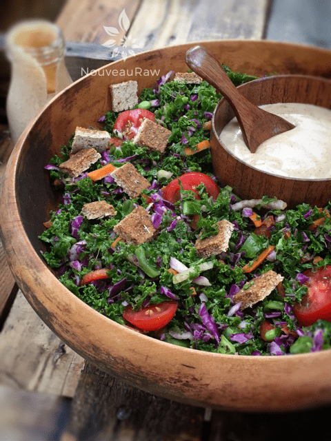

Wilted Kale Veggie Salad with Sweet and Spicy Asian Dressing

~ raw, vegan, gluten-free ~
When I made this salad for my friend, he said that he could feel the healing vibrations before the fork even hit his lips. That is a pretty powerful statement, but then so are all the amazing, healthy ingredients used in creating this salad.
I clearly can’t go into detail about all of the nutritional benefits that each ingredient possesses but after you scan through, I think you will get the picture. It is a large salad, but one that you can make and enjoy throughout the week. Or scale it down to size.
The key to enjoying greens like this is a two-step tip. First of all, cut the kale and all of the other veggies very small. In fact, if you own a food processor, use the shredder blade. This will save you a lot of time.
The second step is to massage the kale with the lemon juice, olive oil, and salt. This will break down the cell wall of the kale, making it softer and much easier to chew.
These little tips will make all the difference in the outcome of this salad. The dressing that I created for this salad has somewhat of a peanut sauce flavor. It is rich and creamy. I recommend dressing your salad as you prepare to eat it.
I did use both almond and cashew butter, but you can use all almond butter if that is all that you have on hand. I have made it both ways and enjoyed them.
Upon serving the salad, I tossed in some of my almond pulp based croutons. Check out all the different ones that you can make by clicking (here). I hope you enjoy this recipe. Please comment below. Many blessings, amie sue
yields 17 cups
Dressing: yields 3 cups
- 1/2 cup Medjool dates, pitted & rehydrated in hot water
- 1 cup water
- 1/2 cup raw almond butter
- 1/2 cup raw cashew butter
- 1/4 cup apple cider vinegar
- 2 tsp ground ginger
- 3 Tbsp raw coconut amino
- 1 tsp ground garlic
- 1 tsp red pepper flakes
Wilted kale:
- 2 heads curly kale
- 2 Tbsp lemon juice
- 1 Tbsp olive oil
- 1 tsp Himalayan pink salt
Veggies:
- 1 cup sprouts
- 1 cup sliced cherry tomatoes
- 2 cups chopped purple cabbage
- 2 cups chopped carrot
- 2 cups chopped sugar snaps
- 1/2 cup diced red pepper
- 1/2 cup diced red onion
Preparation:
Sauce:
- Place the dates in a bowl and cover with hot water to soften while you put the rest of the recipe together. Set aside.
- In the blender add the water, almond butter, cashew butter, apple cider vinegar, ginger, coconut amino, garlic and red pepper flakes. Remove the dates from the soak water and place the dates in the blender. Process until smooth and creamy.
- If you want a thinner dressing, add more water. If you would like to use this dressing as a dip, use less water.
- Store leftover dressing in an airtight container for 5-7 days.
Wilted kale:
- Wash and dry the kale. Remove the stems. Roll the leaves tightly and cut into thin slices. Place in a large bowl.
- Sprinkle the lemon juice, olive oil and salt over the kale.
- With your hands, massage the kale until it wilts. Set aside.
Veggies:
- Add to the bowl of kale; sprouts, cherry tomatoes, cabbage, carrots, sugar snaps, red pepper, and onions. Toss together.
- When ready to eat, pour dressing over the salad, tossing it together, making sure to coat everything. Eat and enjoy!

© AmieSue.com